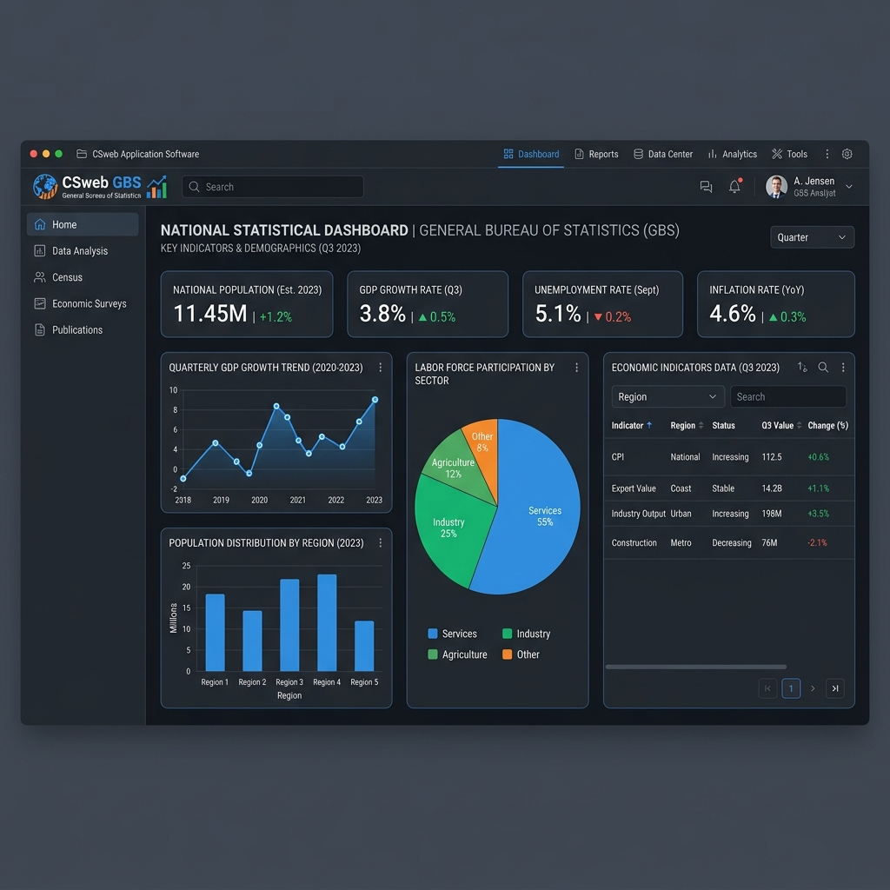

Use the controls below to filter Ritesh's projects by system role.
Coordinated a critical migration from a cPanel shared hosting configuration to a custom-built government mail platform. Met security objectives while maintaining high-availability mail flows for government personnel.

Led the implementation and system configuration of the CSweb application for the General Bureau of Statistics (ABS). Translated functional statistics requirements into active server settings.